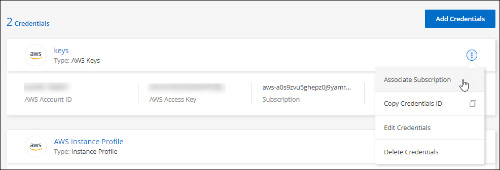

要求變更文件
要求變更文件 編輯此頁面
編輯此頁面 瞭解如何作出貢獻
瞭解如何作出貢獻管理AWS認證資料和Cloud Manager訂閱
新增及管理AWS認證資料、讓Cloud Manager擁有在AWS帳戶中部署及管理雲端資源所需的權限。如果您管理多個 AWS 訂閱、您可以從「認證」頁面將每個訂閱指派給不同的 AWS 認證資料。
總覽
您可以將AWS認證資料新增至現有的Connector、或直接新增至Cloud Manager：
-
將AWS認證資料新增至現有的Connector
將新的AWS認證資料新增至現有的Connector、可讓您Cloud Volumes ONTAP 使用相同的Connector在另一個AWS帳戶中部署。 瞭解如何將AWS認證資料新增至Connector。
-
直接將AWS認證資料新增至Cloud Manager
將新的AWS認證資料新增至Cloud Manager、可讓Cloud Manager擁有必要的權限、以建立和管理適用於ONTAP 整個作業環境的FSX、或是建立Connector。 瞭解如何將AWS認證資料新增至Cloud Manager。
如何旋轉認證資料
Cloud Manager 可讓您以幾種方式提供 AWS 認證資料：與 Connector 執行個體相關的 IAM 角色、在信任的帳戶中擔任 IAM 角色、或提供 AWS 存取金鑰。 "深入瞭解 AWS 認證與權限"。
Cloud Manager 採用前兩個選項、使用 AWS 安全性權杖服務取得持續循環的暫用認證資料。此程序是最佳實務做法、因為它是自動且安全的。
如果您為 Cloud Manager 提供 AWS 存取金鑰、您應該定期在 Cloud Manager 中更新金鑰、藉此旋轉金鑰。這是完全手動的程序。
新增認證到Connector
將AWS認證資料新增至Connector、以便在Cloud Volumes ONTAP 其他AWS帳戶中部署及管理功能。您可以在其他帳戶中提供IAM角色的ARN、或是提供AWS存取金鑰。
授予權限
在您新增額外的AWS認證資料至Connector之前、您必須先提供必要的權限。這些權限可讓 Cloud Manager 管理該 AWS 帳戶內的資源和程序。您提供權限的方式取決於您是否要為Cloud Manager提供信任帳戶或AWS金鑰中角色的ARN。

|
當您從 Cloud Manager 部署 Connector 時、 Cloud Manager 會自動為您部署 Connector 的帳戶新增 AWS 認證資料。如果您在現有系統上手動安裝 Connector 軟體、則不會新增此初始帳戶。 "深入瞭解 AWS 認證與權限"。 |
在另一個帳戶中擔任IAM角色、藉此授予權限
您可以使用 IAM 角色、在部署 Connector 執行個體的來源 AWS 帳戶與其他 AWS 帳戶之間建立信任關係。接著、您將從信任的帳戶中、為 Cloud Manager 提供 IAM 角色的 ARN 。
-
前往您要部署Cloud Volumes ONTAP 的目標帳戶中的IAM主控台。
-
在「存取管理」下、按一下*「角色」>「建立角色」*、然後依照步驟建立角色。
請務必執行下列動作：
-
在*信任的實體類型*下、選取* AWS帳戶*。
-
選取*其他AWS帳戶*、然後輸入連接器執行個體所在帳戶的ID。
-
使用Cloud Manager IAM原則建立原則、可從取得 "Cloud Manager 原則頁面"。
-
-
複製IAM角色的角色ARN、以便稍後將其貼到Cloud Manager中。
帳戶現在擁有必要的權限。 您現在可以將認證資料新增至Connector。
提供AWS金鑰來授予權限
如果您想要為 IAM 使用者提供 AWS 金鑰給 Cloud Manager 、則必須將必要的權限授予該使用者。Cloud Manager IAM 原則定義了允許 Cloud Manager 使用的 AWS 動作和資源。
-
請從下載 Cloud Manager IAM 原則 "Cloud Manager 原則頁面"。
-
從 IAM 主控台複製並貼上 Cloud Manager IAM 原則中的文字、以建立您自己的原則。
-
將原則附加至 IAM 角色或 IAM 使用者。
帳戶現在擁有必要的權限。 您現在可以將認證資料新增至Connector。
新增認證資料
在您提供具備所需權限的AWS帳戶之後、您可以將該帳戶的認證資料新增至現有的Connector。這可讓您Cloud Volumes ONTAP 使用相同的Connector在該帳戶中啟動支援功能。
如果您剛在雲端供應商中建立這些認證資料、可能需要幾分鐘的時間才能使用。請稍候幾分鐘、再將認證資料新增至Cloud Manager。
-
請確定Cloud Manager目前已選取正確的Connector。
-
在 Cloud Manager 主控台右上角、按一下「設定」圖示、然後選取 * 認證 * 。

-
按一下*「Add Credential*（新增認證*）」、然後依照精靈中的步驟進行。
-
認證資料位置：選取* Amazon Web Services > Connector*。
-
定義認證資料：提供可信IAM角色的ARN（Amazon資源名稱）、或輸入AWS存取金鑰和秘密金鑰。
-
市場訂閱：立即訂閱或選取現有的訂閱、以建立Marketplace訂閱與這些認證的關聯。
若要以Cloud Volumes ONTAP 每小時費率（PAYGO）或是以年度合約支付、AWS認證資料必須與Cloud Volumes ONTAP 從AWS Marketplace訂閱的功能相關聯。
-
審查：確認新認證資料的詳細資料、然後按一下*新增*。
-
現在、您可以在建立新的工作環境時、從「詳細資料與認證」頁面切換至不同的認證資料集：

新增認證資料至Cloud Manager
為Cloud Manager提供IAM角色的ARN、讓Cloud Manager擁有必要的權限、可為ONTAP 工作環境建立FSX或 建立連接器、藉此將AWS認證新增至Cloud Manager。
您可以在建立FSXfor ONTAP the Sfor the Sfor the Sfor the Sfor the Sfuse環境或建立新的Connector時、使用認證資料。
設定IAM角色
設定IAM角色、讓Cloud Manager SaaS能夠承擔角色。
-
前往目標帳戶中的IAM主控台。
-
在「存取管理」下、按一下*「角色」>「建立角色」*、然後依照步驟建立角色。
請務必執行下列動作：
-
在*信任的實體類型*下、選取* AWS帳戶*。
-
選取*其他AWS帳戶*、然後輸入Cloud Manager SaaS的ID：952013314444.
-
建立一個原則、其中包含建立FSXfor ONTAP the S作業 環境或建立連接器所需的權限。
-
從檢視Connector部署原則 "Cloud Manager 原則頁面"
-
-
複製IAM角色的角色ARN、以便在下一步將其貼到Cloud Manager中。
IAM角色現在擁有所需的權限。 您現在可以將它新增至 Cloud Manager。
新增認證資料
在您提供IAM角色所需的權限之後、請將角色ARN新增至Cloud Manager。
如果您剛建立IAM角色、可能需要幾分鐘的時間才能使用。請稍候幾分鐘、再將認證資料新增至Cloud Manager。
-
在 Cloud Manager 主控台右上角、按一下「設定」圖示、然後選取 * 認證 * 。
-
按一下*「Add Credential*（新增認證*）」、然後依照精靈中的步驟進行。
-
認證資料位置：選取* Amazon Web Services > Cloud Manager*。
-
定義認證資料：提供IAM角色的ARN（Amazon資源名稱）。
-
審查：確認新認證資料的詳細資料、然後按一下*新增*。
-
現在您可以在建立FSXfor ONTAP the Sfor the Sfor the Sfor the fuse環境或建立新的Connector時、使用認證資料。
建立AWS訂閱的關聯
將 AWS 認證資料新增至 Cloud Manager 之後、您可以將 AWS Marketplace 訂閱與這些認證資料建立關聯。訂閱可讓您以Cloud Volumes ONTAP 小時費率（PAYGO）或使用年度合約來支付報銷費用、並使用其他NetApp雲端服務。
您可能會在將認證新增至 Cloud Manager 之後、在兩種情況下建立 AWS Marketplace 訂閱的關聯：
-
初次將認證新增至 Cloud Manager 時、您並未建立訂閱關聯。
-
您想要以新的訂閱取代現有的 AWS Marketplace 訂閱。
您必須先建立連接器、才能變更 Cloud Manager 設定。 "瞭解如何建立連接器"。
-
在 Cloud Manager 主控台右上角、按一下「設定」圖示、然後選取 * 認證 * 。
-
按一下動作功能表以取得一組認證資料、然後選取「建立訂閱關聯」。

-
從下拉式清單中選取現有的訂閱、或按一下「新增訂閱」、然後依照步驟建立新的訂閱。
編輯認證資料
在Cloud Manager中編輯AWS認證資料、方法是變更帳戶類型（AWS金鑰或承擔角色）、編輯名稱、或自行更新認證資料（金鑰或角色ARN）。

|
您無法編輯與Connector執行個體相關聯之執行個體設定檔的認證資料。 |
-
在 Cloud Manager 主控台右上角、按一下「設定」圖示、然後選取 * 認證 * 。
-
按一下動作功能表以取得一組認證資料、然後選取*編輯認證*。
-
進行必要的變更、然後按一下「套用」。
刪除認證資料
如果您不再需要一組認證資料、可以從Cloud Manager刪除。您只能刪除與工作環境無關的認證資料。
|
|
您無法刪除與連接器執行個體相關聯之執行個體設定檔的認證。 |
-
在 Cloud Manager 主控台右上角、按一下「設定」圖示、然後選取 * 認證 * 。
-
按一下動作功能表以取得一組認證資料、然後選取*刪除認證資料*。
-
按一下*刪除*以確認。